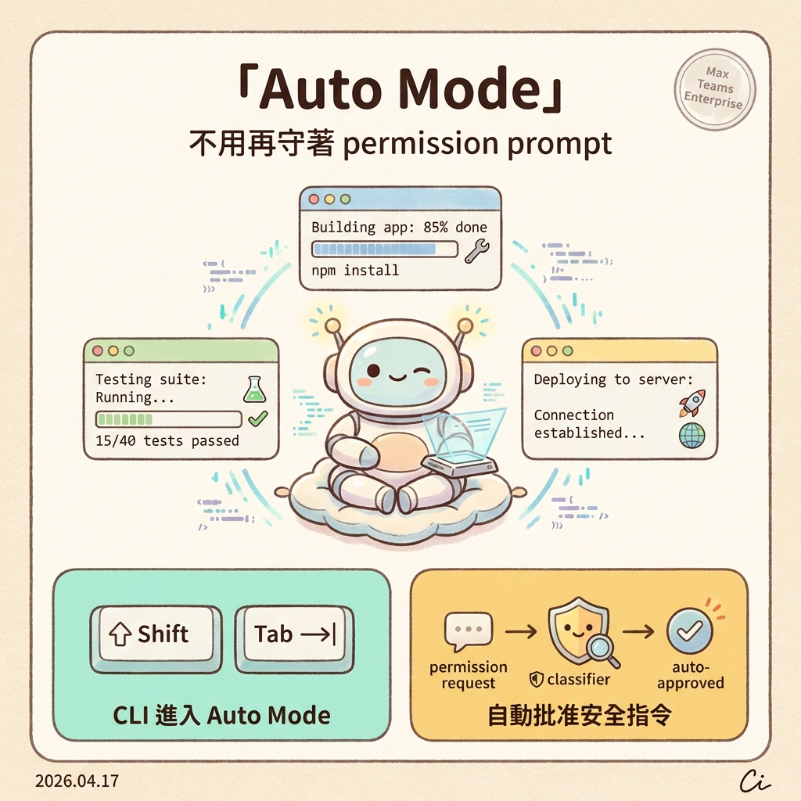
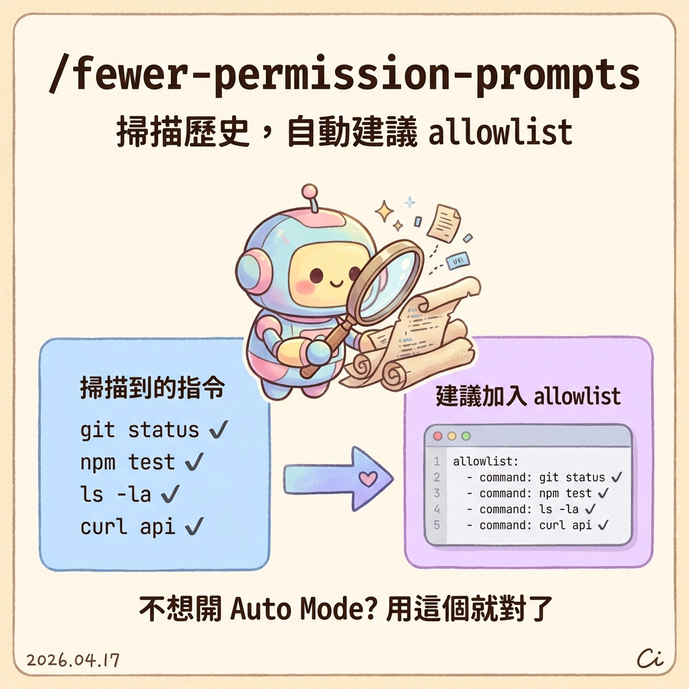
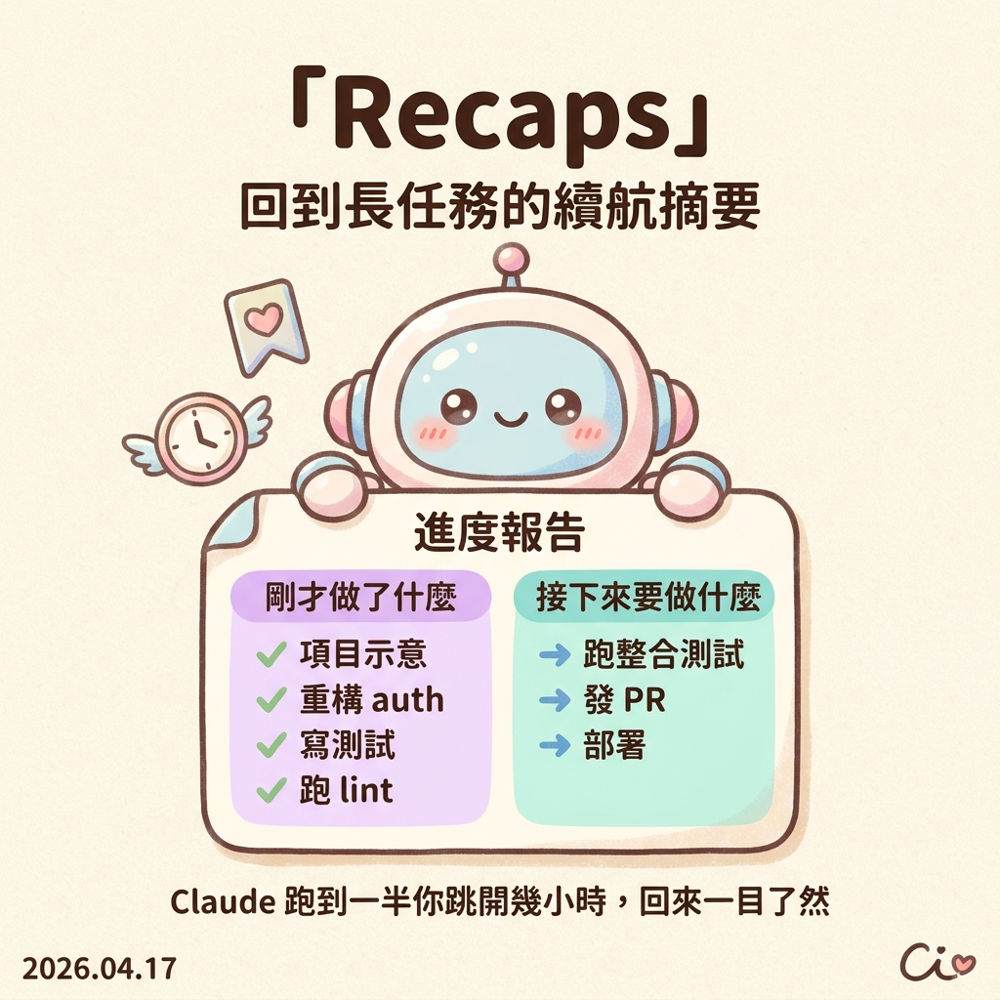
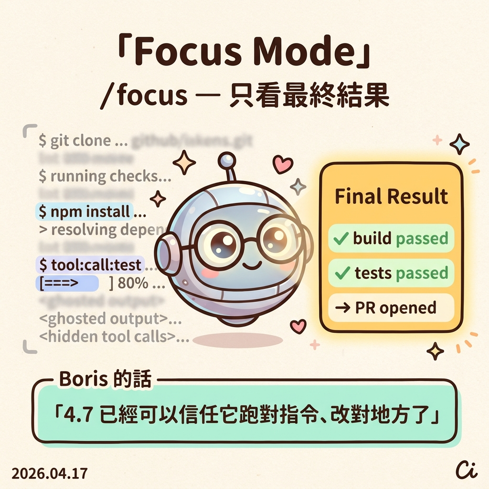
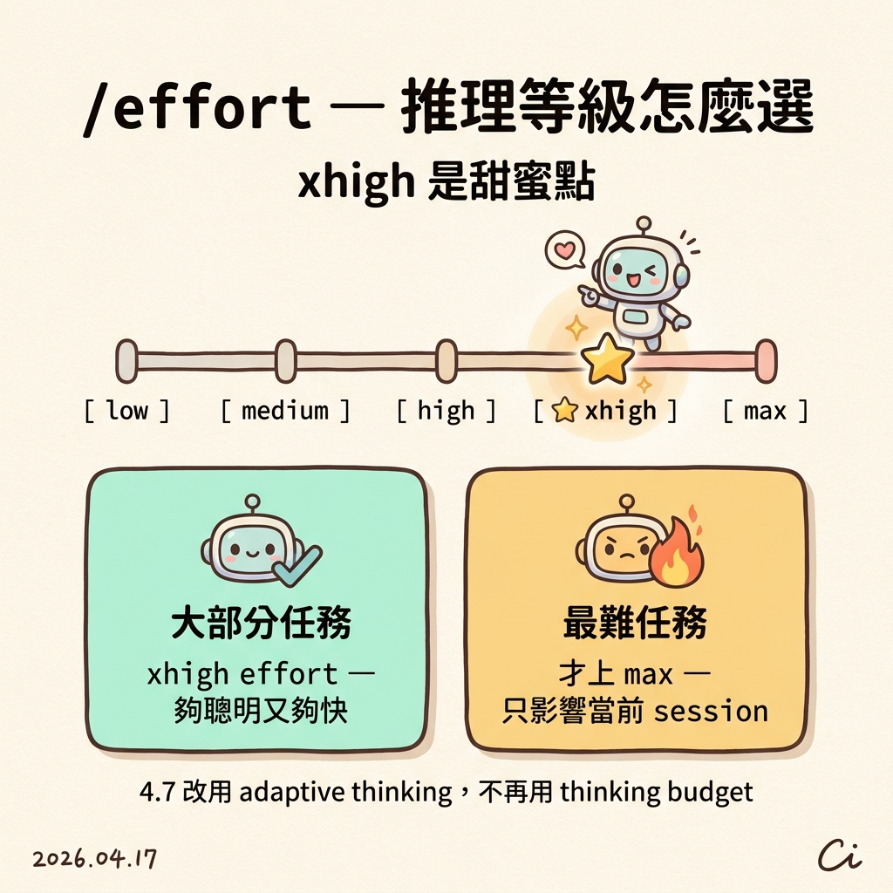
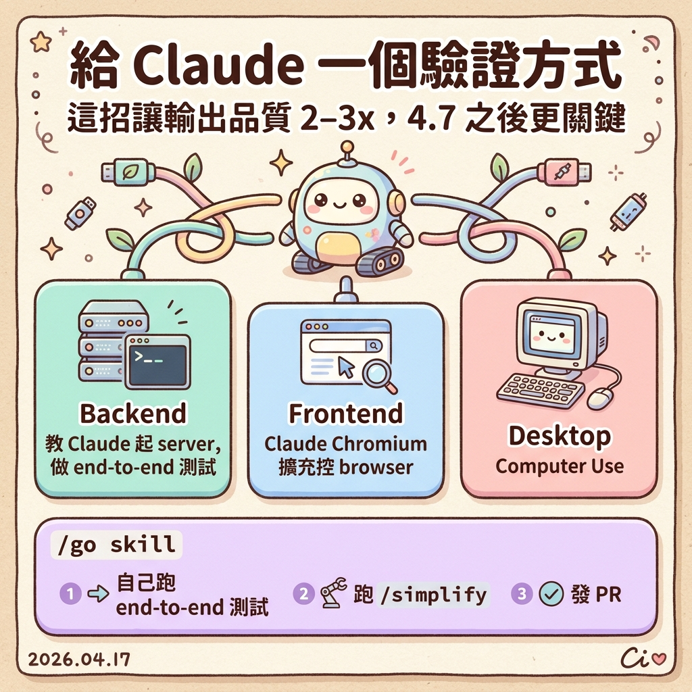

Boris Cherny（Claude Code 的 tech lead）dogfood 4.7 幾週後，在 Threads 丟出的 6 個使用 tips。從 Auto Mode 到 /focus、從 effort 調校到驗證 workflow——每個 tip 都附繁中解說與情境圖。
Opus 4.7 很適合跑長任務——deep research、重構、iterate 到命中 perf benchmark。Auto mode 把 permission 請求送 classifier 判斷，安全就自動批准。
--dangerously-skip-permissions 硬上。Auto mode 把 permission 請求送 classifier，安全就自動批准。
$ claude # CLI 按 Shift + Tab 進入 Auto Mode → permission prompt 送 classifier 判斷 → 安全指令自動批准，不用守在旁邊 → 多個 session 並行跑，切換自如

新的 skill，會掃你 session 歷史，找出那些「明明安全卻一直被問」的 bash 與 MCP 指令，直接幫你列出該加進 allowlist 的清單。

git status、npm test、curl <api>、ls -la。
.claude/settings.json，往後就不再被問。
/less-permission-prompts 是社群的早期版，官方新 skill 名稱為 /fewer-permission-prompts，邏輯類似但 Boris 建議用官方版。
這週稍早為了 Opus 4.7 發布的小功能。Claude 跑到一半你跳開幾分鐘、幾小時再回來，Recaps 會直接告訴你 agent 剛才做了什麼、接下來要做什麼。
agent 已完成的工作一覽——不用翻 log 往前倒帶。
下一步 plan，讓你能直接決定「繼續跑」或「調整方向」。
任何長跑任務——deep research、大型重構、跨多檔案的 feature。

CLI 新功能——把中間所有過程都隱藏，只顯示最後結果。4.7 已經到一個可以被信任的水準，Boris 自己大部分任務都只看結果。

/focus 指令 on/off——不用的時候切回一般模式，看完整過程。
4.7 改用 adaptive thinking，不再用 thinking budget。要調它想多久？用 effort。Boris 自己大部分任務用 xhigh，最難的任務才上 max。
低 effort 走「快、省 token」路線，高 effort 走「最聰明」路線。用 /effort 指令切換；除了 max 之外都會記住。

Boris 說這招過去就能讓 Claude 輸出品質 2–3×，4.7 之後更關鍵——因為模型跑更久、更 agentic，沒驗證你根本不知道它是不是在幻覺。
教 Claude 怎麼起你的 server / service，讓它自己跑 end-to-end 測試，看 response 才算完成。
用 Claude Chromium extension 控 browser，讓它真的點點看、看到 UI 才算完成。
用 computer use，讓它實際操作介面完成任務，不是只改 code。
/go skill他常用 prompt 長這樣：「Claude do X /go」。/go 是個 skill，會做三件事：
/simplify把冗餘 wrapper / 過度工程的部分刪乾淨
4.7 的體感，不在於模型變聰明了多少，而在於你願不願意讓它跑得更久、管得更少。